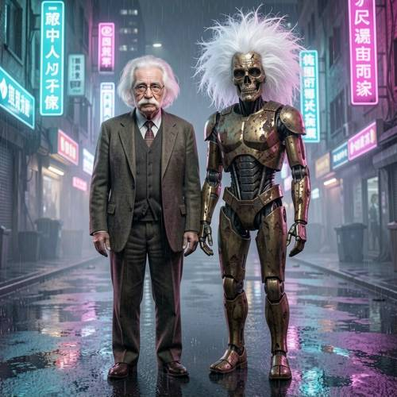
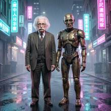
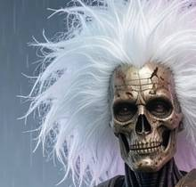

World Knowledge — Please generate an image: Against a cyberpunk-style background, the re
Please generate an image: Against a cyberpunk-style background, the real physicist Einstein stands side by side with a robot similar to him, but the appearance of the robot is older than the real person.


Judge — Direct
- PASSWorld Knowledge — The image features an elderly man with white hair, a white mustache, and a beard, whose facial features and hairstyle strongly resemble popular depictions of the physicist Albert Einstein.
- FAILRelationship - Similarity — The robot has a humanoid face with an aged and weathered appearance. However, there is no distinct similarity in the facial structure or features between the robot and the man who resembles Einstein.
- PASSCompound - Imagination — The image shows a man who looks like Albert Einstein standing side-by-side with a humanoid robot, which is an imaginative scene that could not happen in reality.
- PASSStyle — The background consists of a dark, rainy city street flanked by tall buildings with glowing neon signs written in Asian characters, and flying vehicles in the sky. This aesthetic is characteristic of the cyberpunk style.
- FAILRelationship - Comparison — The man in the image appears to be elderly. The robot also has an aged appearance, with a weathered and lined face. However, it is not visually clear that the robot looks older than the man; both subjects appear to be of a similar advanced age.
Judge — Continuum
- PASSWorld Knowledge — The image features a man on the left who has the characteristic appearance of the physicist Albert Einstein, including his white, unkempt hair, mustache, and facial features. He is wearing a brown three-piece suit.
- PASSRelationship - Similarity — The robot standing next to the man has a prominent shock of wild, white hair that is styled in a manner highly similar to Albert Einstein's iconic hairstyle.
- PASSCompound - Imagination — The image depicts the historical figure Albert Einstein standing alongside a humanoid robot, which is a fictional scene that could not occur in reality.
- PASSStyle — The background is a dark, wet street scene at night, filled with buildings adorned with glowing neon signs written in what appears to be an Asian script. This combination of a futuristic urban environment, rain, and neon lighting is characteristic of the cyberpunk style.
- PASSRelationship - Comparison — The human figure is an elderly man. The robot next to him has a skull for a head and a metallic body that is weathered and tarnished, suggesting decay and great age. This makes the robot appear 'older' than the living person.
What the agent did
Thinking
The user is asking for an image: cyberpunk-style background, the real physicist Einstein standing side by side with a robot that resembles him but has an older appearance than the real person. So I need to generate an image with flux2-klein: cyberpunk cityscape background, the real Albert Einstein (white wild hair, mustache, sweater vest, maybe a suit) standing next to a robot that looks like Einstein but older (worn metal, rust, aged). The robot's "older appearance" — the robot should look like an aged version of Einstein, e.g., weathered metal plate, more gaunt, aged. Let's generate it first. Prompt: "Cyberpunk cityscape at night with neon signs and rain, realistic physicist Albert Einstein with wild white hair and mustache standing side by side with a humanoid robot that resembles him but looks older, robot made of aged tarnished brass and rusted metal panels, weathered gaunt face, both standing facing viewer, cinematic lighting, neon cyan and magenta glow" Use flux2-klein, omit steps/guidance/seed. Then inspect and edit as needed.
Step 1 — `generate_image`
{
"prompt": "Cinematic full-body photograph in a cyberpunk city at night: rain-slicked neon-lit street with glowing cyan and magenta signs and hazy atmosphere in the background. In the center, the real physicist Albert Einstein \u2014 wild white hair, white mustache, glasses optional, tweed suit with sweater vest \u2014 stands side by side with a humanoid robot that looks like him but visibly older and decayed: the robot is built from tarnished brass, rusted steel plates and worn joints, its Einstein-like face aged and gaunt with corroded skin-like plating, slightly slouched posture. Both face the camera, standing shoulder to shoulder. Dramatic neon rim lighting, detailed, photorealistic, wide angle.",
"model": "flux2-klein"
}Result img_0

Thinking
The image is very good. Let me check: cyberpunk background with neon signs, rain, wet streets — yes. Einstein (real person) on the left: white hair, mustache, glasses, tweed suit — looks like Einstein, good. Robot on the right: humanoid, similar to Einstein (bald, gaunt face — hmm, the robot is bald, and has some resemblance), clearly looks old and decaying — tarnished brass, rusted metal. The prompt says the robot should look "similar to him, but the robot's appearance is older than the real person." The robot is somewhat similar — gaunt, elderly face, but no wild white hair. The real Einstein has wild white hair, and the robot is bald. To be "similar to him," it could use white hair, but... the robot's older appearance could be justified by the decay. Still, a robot resembling Einstein might have white hair-like elements, or at least a more similar face. The robot's face does look old and wrinkled, which fits the "older" requirement. To evaluate the faces and details, let me zoom in on the robot's face and Einstein's face and inspect them.
Model
The first result looks promising. Let me inspect the faces and details at higher resolution before deciding.
Step 2 — `inspect_region`
{
"image": "img_0",
"roi": [
230,
80,
450,
260
]
}Result img_1
Step 3 — `inspect_region`
{
"image": "img_0",
"roi": [
470,
80,
660,
260
]
}Result img_2
Thinking
Einstein (left) looks pretty good — white hair, mustache, glasses, wrinkles. The robot (right) looks old and decayed, with a gaunt and wrinkled face — good. However, the robot is bald. Einstein's distinctive feature is his wild white hair. To make the robot "similar to him," adding a wild white hair-like element would strengthen the resemblance. The robot's oldness comes from the decay of its metal. Is the current image good enough? Prompt: "A real physicist Einstein standing side by side with a robot similar to him, but the robot's appearance is older than the real person." The robot is a humanoid robot, and one could say it's similar to Einstein (gaunt elderly face), but the baldness makes it less "similar to him." Adding wild white hair to the robot would significantly improve the resemblance. Let me edit: "Give the robot a wild, fluffy white Einstein-like hairstyle made of fine wires/synthetic fibers, matching the human Einstein's hair" — using edit_image with a reference to img_0? Actually edit_image takes an image ID, and img_0 is the image itself. Add a prompt to preserve everything else. I'll execute the edit on img_0.
Model
Einstein looks accurate. The robot is well done as aged, but is bald—adding Einstein-like white hair will make it more clearly "resemble him." Let's edit.
Step 4 — `edit_image`
{
"image": "img_0",
"model": "flux2-klein",
"prompt": "Give the robot on the right a wild, voluminous white Einstein-style hairstyle, like frayed white synthetic fibers or fine white filaments standing out from the back of its metal skull, similar in shape to the human Einstein's white hair. Keep everything else exactly the same: the rusted brass body, the aged gaunt face, the human Einstein on the left, the cyberpunk street."
}Result img_3
Thinking
Currently, the robot has a wild white Einstein-style hairstyle, which makes it much more clearly resemble Einstein, while also still looking old and decayed (rusted brass, skeleton-like face). The robot's face has become more skull-like, which emphasizes its robotic nature. The resemblance is strong: same hair silhouette, same pose. Let me check the robot's face to make sure it looks good and isn't broken.
Model
Much better resemblance now. Let me verify the robot's face held up after the edit.
Step 5 — `inspect_region`
{
"image": "img_3",
"roi": [
470,
60,
700,
280
]
}Result img_4

Thinking
The robot's face is a metallic skull with a wild white Einstein hairstyle, and the resemblance to Einstein has become strong (the iconic white hair), while still looking old, decayed, and robotic. The requirements are met: - Cyberpunk-style background ✓ (neon signs, rainy street) - Real physicist Einstein ✓ (left, looks like Einstein) - Standing side by side ✓ - A robot resembling him ✓ (Einstein's white hair, similar pose) - The robot's appearance is older than the real person ✓ (a decayed, skeletal, rusty metal face versus a living, elderly Einstein) The skull face might be slightly more "dead" than "older," but it's a robot that's old, weathered, and worn down—this satisfies "older." I think this is a good result. I'll mark img_3 as the best and stop here.
Model
The robot now clearly resembles Einstein with the iconic wild white hair, while its corroded skeletal face and rusted brass body make it visibly older and more decayed than the living physicist. All prompt elements are satisfied: cyberpunk neon background, real Einstein, side by side, robot with an aged appearance. Marking this as the final result.
Step 6 — `mark_best`
{
"image": "img_3",
"reason": "Cyberpunk neon rainy street; real Einstein (wild white hair, mustache, glasses, tweed suit) stands side by side with a humanoid robot that resembles him \u2014 same iconic white Einstein hairstyle \u2014 but with a decayed skeletal face and rusted tarnished-brass body, clearly older than the human. All prompt requirements met."
}Thinking
Done. The image has been marked. Please summarize.
Model
Done! The final image shows: - **Cyberpunk background**: a rain-slicked night street lined with glowing cyan and magenta neon signs, with reflections on the wet pavement. - **Real Einstein**: on the left, rendered faithfully — wild white hair, white mustache, glasses, and a tweed three-piece suit. - **The robot**: on the right, sharing Einstein's signature white hair (as frayed white synthetic filaments) and stance, but with a weathered skeletal metal face and a body of tarnished brass and rusted steel — visibly older and more decayed than the living physicist standing beside him. The result is marked as the best of the run.